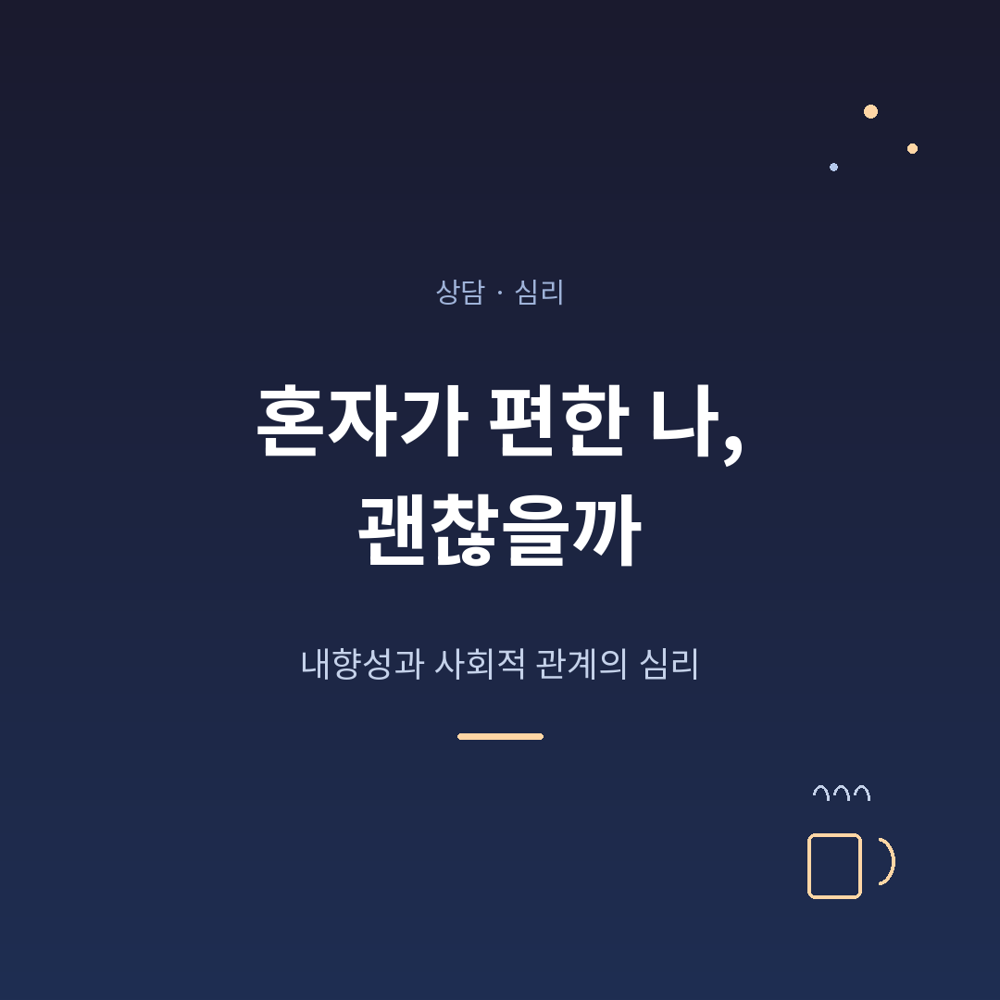
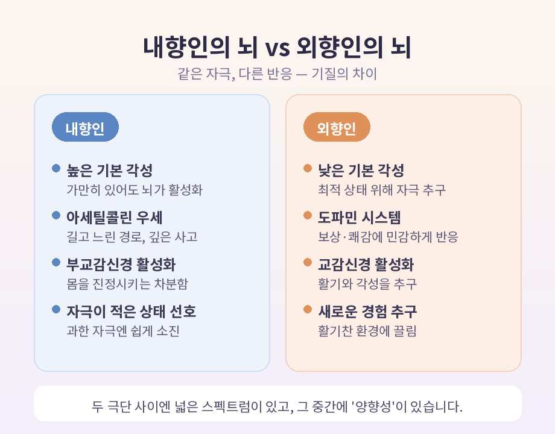
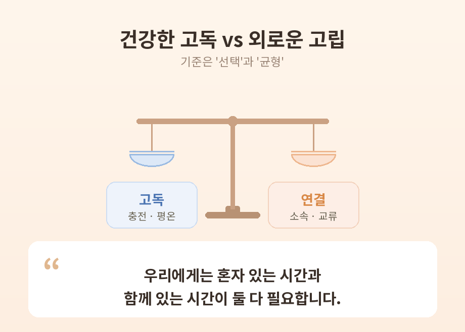

혼자 있는 시간이 편한 나, 정말 괜찮은 걸까. 이번 글에서는 내향성과 사회적 관계의 심리를 정리해 보겠습니다. 결론부터 말씀드리면, 혼자가 편한 것은 그 자체로 문제가 아닙니다. 다만 그 편안함이 회복의 신호인지, 회피의 신호인지를 구분하는 일은 필요합니다.
이 글은 일반적·교육적 정보를 전할 뿐, 전문적인 심리 진단이나 상담을 대체하지 않습니다. 그 점을 먼저 짚고 시작하겠습니다.
가장 흔한 오해부터 풀어야겠습니다.
많은 분들이 '내향 = 수줍음 = 사회불안'을 하나로 묶어 생각합니다. 그러나 심리학에서는 이 셋을 명확히 구분합니다.
내향성은 에너지를 어디서 얻고 어떻게 회복하느냐의 문제입니다. 내향인은 혼자 보내는 시간을 통해 에너지를 충전하고, 외향인은 사람들과의 상호작용에서 에너지를 얻습니다. 큰 무리 속에서 시간을 보내면 내향인은 쉽게 소진감을 느끼지만, 가까운 소수와의 자리에서는 덜 그렇습니다.
핵심은 내향성이 '두려움'이 아니라 '자극이 적은 상태에 대한 선호'에서 비롯된다는 점입니다.
수줍음은 조금 다릅니다. 낯선 자리에서 처음에 망설이는 경향이고, 그 바탕에는 부정적 평가에 대한 걱정이 깔려 있습니다.
사회불안은 한 발 더 나아갑니다. 사회적 상호작용에 대한 지속적이고 때로는 심각한 두려움으로, 일상 기능을 무너뜨릴 만큼 강할 수 있습니다. 셋 중 사회불안만이 정신건강 장애로 분류됩니다.
결정적 차이는 이렇게 압축됩니다.
"내향인은 원하지 않아서 빠지고, 수줍거나 불안한 사람은 원하지만 두려워서 빠진다."
선호와 공포는 다릅니다. 내향인이면서 동시에 수줍을 수도 있고, 외향인이면서 사회불안을 가질 수도 있습니다. 별개의 차원인 셈입니다.
내향성과 외향성은 단순한 취향이 아니라 타고난 기질과 연결되어 있다는 연구들이 있습니다. 다만 아래 설명은 '경향성'에 대한 가설이지, 모든 사람에게 기계적으로 들어맞는 법칙은 아니라는 점을 먼저 말씀드립니다.
영국 심리학자 한스 아이젱크는 1950년대에 흥미로운 제안을 했습니다. 내향-외향의 차이가 대뇌 피질 각성 수준의 개인차를 반영한다는 것입니다.
그의 모델에 따르면 내향인은 기본 각성 수준이 더 높습니다. 가만히 있어도 뇌가 이미 충분히 활성화되어 있어서, 외부 자극이 과하면 쉽게 과부하와 피로를 느낍니다.
반대로 외향인은 기본 각성 수준이 낮아, 최적의 상태에 닿으려고 외부 자극을 찾습니다. 활기찬 환경과 새로운 경험에 끌리는 이유입니다.

또 다른 설명도 있습니다. 외향성은 보상과 쾌감을 조절하는 도파민 시스템의 활동과 연관되고, 내향인은 길고 느린 아세틸콜린 경로가 우세하다는 모델입니다.
아세틸콜린은 몸을 진정시키는 부교감신경계를 활성화합니다. 그래서 내향인이 상황을 천천히 곱씹고 깊이 사고하도록 돕는다고 설명합니다.
다만 한 가지 신경전달물질로 성격을 모두 설명하는 것은 단순화라는 비판도 있습니다. 그러니 "확정된 사실"이 아니라 "유력한 설명 모델" 정도로 받아들이시면 좋겠습니다.
한 가지 더. 내향과 외향은 칼로 자르듯 둘로 나뉘지 않습니다. 두 극단 사이에 넓은 스펙트럼이 있고, 그 중간에 양향성이 자리합니다. 오히려 상당수의 사람이 이 중간 성향에 가깝다는 추정이 많습니다.
내향인은 외향성을 이상으로 떠받드는 문화 속에서 자주 오해받습니다. 그리고 그 오해를 내면화해 스스로를 비판하기 쉽습니다.
"나는 왜 사람들과 어울리면 금방 지칠까."
"사교적이지 못한 내가 문제인가."
이런 자책, 한 번쯤 해보셨을 것입니다.
하지만 흔한 통념들은 대부분 사실이 아닙니다.
작가 수전 케인은 저서 『콰이어트』에서 이 점을 이렇게 짚습니다. 카리스마와 외향성이 리더십의 필수라는 통념에 그는 정면으로 도전했습니다.
예전에는 활발함이 곧 정답처럼 여겨졌습니다. 지금은 조용한 강점에도 자리가 있다는 인식이 조금씩 넓어지고 있습니다.
결함이 아닙니다. 기질의 차이입니다. 사회가 한쪽 기질을 기본값으로 삼았기에 생긴 오해일 뿐입니다.
여기서 중요한 구분이 하나 있습니다. "혼자가 편한 것"이 항상 좋은 것도, 항상 나쁜 것도 아니라는 점입니다.
심리학은 선택한 고독과 원치 않는 외로움을 나눕니다.
고독은 평화롭고 회복적인 경험일 수 있습니다. 타인의 요구에서 자유로워져 자기 자신에게 집중하게 하고, 맑은 사고와 편안함을 남깁니다. 건강한 고독 뒤에는 상쾌하고 만족스러운 느낌이 남습니다.
외로움은 다릅니다. '인지된 사회적 고립'에서 오는 정서적 고통으로, 공허함·슬픔·소외감 같은 부정적 정서와 연결됩니다. 이는 정신건강을 해칠 수 있습니다.
연구에 따르면 사회적 고립은 신체적 쇠퇴와 조기 사망의 더 강한 예측인자였고, 외로움은 우울이나 삶의 무의미감 같은 정신건강 문제의 더 강한 예측인자였습니다.
그렇다면 둘을 가르는 기준은 무엇일까요. 핵심은 '선택'과 '균형'입니다.
스스로 선택한 혼자됨과 떠밀린 혼자됨은 심리적 결과가 크게 다릅니다. 회피 동기에서 나온 고립은 잠시 안도감을 주지만, 그 밑에 깔린 외로움을 해결해 주지는 못합니다.
또 어느 정도의 고독은 이롭지만, 적당한 지점을 넘어서면 오히려 해로워지는 전환점이 있습니다. 우리에게는 혼자 있는 시간과 함께 있는 시간이 둘 다 필요합니다.

스스로 점검해 볼 신호가 있습니다.
혼자 시간을 보낸 뒤 충전되고 평온하다면, 건강한 고독에 가깝습니다. 반대로 혼자 있는데도 공허함과 불안이 남고, 점점 사람을 '두려워서' 피하게 된다면, 그것은 고립과 외로움의 신호일 수 있습니다.
이 지점에서 한 가지를 분명히 말씀드리고 싶습니다. 외로움·불안·우울감이 일상 기능을 지속적으로 해친다면, 정신건강 전문가의 도움을 받으시길 권합니다. 혼자 버티는 것이 늘 강함은 아닙니다.
내향인의 '사회적 배터리'는 사교 중에 닳고 혼자 있는 시간에 충전됩니다. 그러니 배터리를 무리하게 방전시키지 않으면서 관계를 가꾸는 전략이 필요합니다.
에너지 관리는 이렇게 해볼 수 있습니다.
관계를 맺을 때는 양보다 질입니다.
피상적인 관계 여럿보다 깊고 의미 있는 관계 소수를 가꾸는 데 집중하는 편이 내향인에게 더 잘 맞습니다.
미리 이야깃거리를 정리해 두는 것도 좋은 방법입니다. 준비가 불안을 줄이고, 대화에 더 깊이 참여하게 해줍니다.
무엇보다 내향인의 강점은 '듣기'에 있습니다. 세심하고 의도적인 경청은 상대가 '이해받고 있다'고 느끼게 합니다. 이것이 신뢰와 깊은 관계의 토대가 됩니다.
직장이나 가족 안에서도 응용이 가능합니다. 회의에서 즉답이 부담스럽다면 "생각할 시간을 달라"고 청하거나 글로 의견을 보완할 수 있습니다. 가까운 사람에게는 "이건 너 때문이 아니라 내 회복을 위한 것"이라고 솔직히 알려 오해를 막는 편이 좋습니다.
물론 이 방법들이 모든 상황을 완벽히 해결해 주지는 않습니다. 다만 자신의 리듬을 존중하며 한 걸음씩 시도해 볼 만합니다.
끝으로 한 마디만 더 드리겠습니다.
혼자가 편한 것은 고쳐야 할 약점이 아니라, 당신이 세상과 관계 맺는 고유한 방식입니다.
— 중요한 것은 '얼마나 활발한가'가 아니라, '혼자와 함께 사이에서 나만의 균형을 찾았는가'입니다.
다시 한번 짚자면, 이 글은 일반적인 정보일 뿐 전문 상담을 대체하지 않습니다. 그러나 한 가지는 분명합니다. 혼자가 편한 당신은, 그 자체로 이미 괜찮습니다.